and Frequencies
scipy.signal.convolve2d, moves on to
finite difference operators for image gradients, and finishes with Gaussian smoothing and
Derivative of Gaussian (DoG) filters to get cleaner edges. Part 2 works with image
frequencies to sharpen images, build hybrids that change with viewing distance, and blend
images with Gaussian and Laplacian stacks.
Both versions compute a "same" convolution with zero padding, so the
output is the same size as the input. The kernel is first flipped along both axes with
np.flip (a 180° rotation). That flip is what makes this convolution
rather than correlation. The image is then padded by the kernel's radius,
(kh-1)//2 rows and (kw-1)//2 columns on each side, so every
original pixel can sit at the center of the kernel. After padding, the window for
output pixel (i, j) is simply padded[i:i+kh, j:j+kw]. Both
versions assume odd kernel sizes, which covers every kernel used here.
def pad_zeros(im, pad_h, pad_w):
new_h = im.shape[0] + 2 * pad_h
new_w = im.shape[1] + 2 * pad_w
padded_im = np.zeros((new_h, new_w))
padded_im[pad_h : pad_h + im.shape[0], pad_w : pad_w + im.shape[1]] = im
return padded_im
def conv2d_four_loops(im, kernel):
flipped_kernel = np.flip(kernel)
kh, kw = kernel.shape
pad_h = (kh - 1) // 2
pad_w = (kw - 1) // 2
padded_im = pad_zeros(im, pad_h, pad_w)
out = np.zeros(im.shape)
for i in range(im.shape[0]):
for j in range(im.shape[1]):
for kr in range(kh):
for kc in range(kw):
out[i, j] += padded_im[i + kr, j + kc] * flipped_kernel[kr, kc]
return out
def conv2d_two_loops(im, kernel):
flipped_kernel = np.flip(kernel)
kh, kw = kernel.shape
pad_h = (kh - 1) // 2
pad_w = (kw - 1) // 2
padded_im = pad_zeros(im, pad_h, pad_w)
out = np.zeros(im.shape)
for i in range(im.shape[0]):
for j in range(im.shape[1]):
window = padded_im[i : i + kh, j : j + kw]
out[i, j] = np.sum(window * flipped_kernel)
return out
box_filter = np.ones((9, 9)) / 81 # sums to 1, so flat regions keep their brightness
D_X = np.array([[1, 0, -1]])
D_Y = D_X.T
grayscale

9×9

[1, 0, -1]

[1, 0, -1]T
The box filter smooths away fine detail such as the hair texture. Dx responds to vertical edges, where brightness changes left to right, like the ceiling beams, vertical window frames and the sides of the face and nose. Horizontal window bars almost disappear. Dy does the opposite and picks up horizontal edges like the window bars, eyebrows, eyelids, mouth and collar. The derivative images look embossed because they're signed. For display, 0 maps to mid-gray, positive values are lighter and negative values darker.
| Kernel | four loops | two loops | scipy | max |ours − scipy| |
|---|---|---|---|---|
| box 9×9 | 13.69 s | 1.49 s | 0.048 s | 2.1e-15 / 6.7e-16 |
| Dx 1×3 | 0.69 s | 1.60 s | 0.004 s | 0 / 0 |
| Dy 3×1 | 0.99 s | 1.66 s | 0.009 s | 0 / 0 |
On the 450×600 selfie, compared against
convolve2d(mode="same", boundary="fill", fillvalue=0). Both versions also
matched scipy to within 4e-15 on non-square random kernels (3×5, 7×3).
Both match scipy to within floating-point rounding. For the 9×9 box, two loops is
about 9× faster because the 81 multiply-adds run in numpy's compiled code instead
of Python. For the 3-tap Dx/Dy kernels, four loops actually
won. Two loops pays a fixed per-pixel overhead (slicing, temp array,
np.sum) that costs more than 3 plain multiplies. Scipy wins everywhere
because the whole convolution is compiled.
Boundary handling. Zero padding treats everything outside the image as black.
The box filter darkens the border (border mean 0.57 → 0.32), and
Dx/Dy see a fake edge where the image meets the padding, about
20× stronger than a typical real edge (0.66 vs. 0.033). Parts 1.2 and 1.3 avoid
this with scipy's boundary="symm", which mirrors the image instead.
The cameraman image is convolved with Dx and Dy to get the
partial derivatives. At each pixel, (dx, dy) is the gradient vector, and
its length sqrt(dx² + dy²) is the gradient magnitude. That's the
edge strength in any direction. Thresholding the magnitude
(mag > t) gives a binary edge image. All convolutions here use
boundary="symm".


Dx

Dy

magnitude


| t = 0.15 | t = 0.20 | t = 0.25 | |
|---|---|---|---|
| Cameraman + camera | solid, extra face/coat detail | solid | solid |
| Tripod legs | continuous | continuous | mostly, small gaps |
| Dome | full arc | most of the arc | right fragment only |
| Horizon / building bases | clearly traced | partly | mostly gone |
| Grass noise | heavy speckle, bottom third | moderate, very bottom | light |
I chose t = 0.20 because it keeps the subject, tripod and most background structure while removing most grass noise. No threshold is perfect, because grass texture and the faint buildings have similar gradient magnitudes. This motivates smoothing in 1.3.
The thin frame in the edge images comes from a 1-pixel semi-transparent border in the
provided cameraman.png, not from convolution padding.
The 9×9 Gaussian G is the outer product of cv2.getGaussianKernel(9, 1.5)
with itself. Method 1 blurs the image with G, then runs the 1.2 pipeline.
Method 2 builds the DoG filters G ⊛ Dx and G ⊛ Dy
(mode="full", zero fill, so the whole filter is kept) and convolves the
image with each one once.

G(9, σ=1.5)


magnitude

G ⊛ Dx

G ⊛ Dy

magnitude
Each DoG filter looks like a smoothed [1, 0, -1], with a positive (bright)
Gaussian lobe next to a negative (dark) one.
Convolution is associative, so (im ⊛ G) ⊛ D = im ⊛ (G ⊛ D), and both methods should give the same result. The table shows the largest difference between them.
| interior (10 px border excluded) | whole image | |
|---|---|---|
| dx | 7.1e-16 | not measured |
| dy | 7.7e-16 | not measured |
| magnitude | 7.2e-16 | 7.2e-16 |
The methods match everywhere, including the border. The only differences are floating-point rounding. I expected the border to differ, since Method 1 mirrors the image twice and Method 2 mirrors it once. But the Gaussian is symmetric, so mirroring before blurring or after blurring gives identical values at the edge.


| t | Grass | Dome | Tower | Horizon |
|---|---|---|---|---|
| 0.05 | heavy, blobby texture | full | visible | full |
| 0.06 | light scattered speckle | nearly full arc | left edge + top | clear |
| 0.07 | lighter speckle | most of the arc | partial | clear |
| 0.08 | almost clean | partial | gone | partial |
| 0.10 | clean | fragment | gone | partial |
I chose t = 0.07 for the same reason as in 1.2. It keeps most of the background structure (dome, horizon, part of the tower) and accepts a little grass speckle. Blurring changes the magnitudes a lot, so the threshold is much lower than 1.2's 0.20.
t = 0.20
t = 0.07
Smoothing makes the edges thicker and smoother and the grass much quieter. The blur squeezes the grass texture into a narrow band of low magnitudes while real boundaries stay strong, so a threshold can now separate them. That's why the grass almost vanishes between t = 0.05 and 0.08. The tradeoff is that edges are a few pixels wide instead of one.
A Gaussian blur keeps the low frequencies. Subtracting it from the original leaves the
high frequencies (edges and texture), and unsharp masking adds those back scaled by α,
sharpened = im + α(im − im ⊛ G). Edges gain contrast, but no new
detail is created. I used a 9×9 Gaussian with σ = 1.5 on each RGB channel.
Writing the original as a convolution with an impulse e turns this into one kernel.
im + α(im − im⊛G) = (1+α)·(im⊛e) − α·(im⊛G) = im ⊛ ((1+α)·e − α·G)The kernel is a tall spike with a shallow negative Gaussian around it. It sums to 1, so flat areas keep their brightness, while edges get brighter on one side and darker on the other. It matches the two-step version to 1.1e-15.

low freq
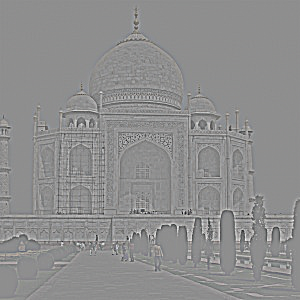
high freq
α = 1
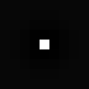
α = 1
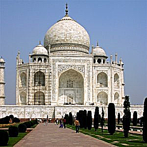
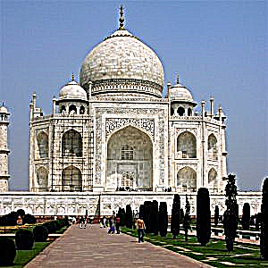
At α = 1 the dome, carvings and trees look crisper without looking processed. At α = 4 it's over-sharpened, with dark halos around the dome, light halos around the trees, and amplified JPEG artifacts, since those are high frequencies too.
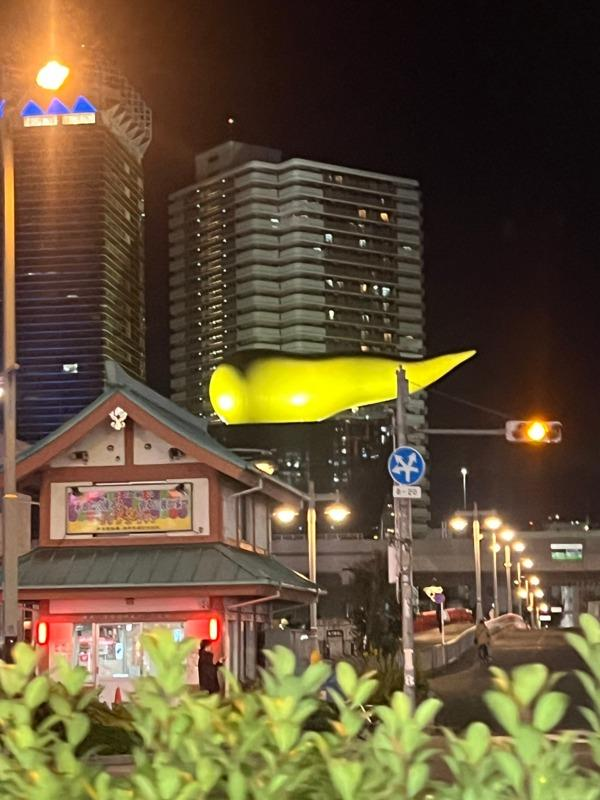
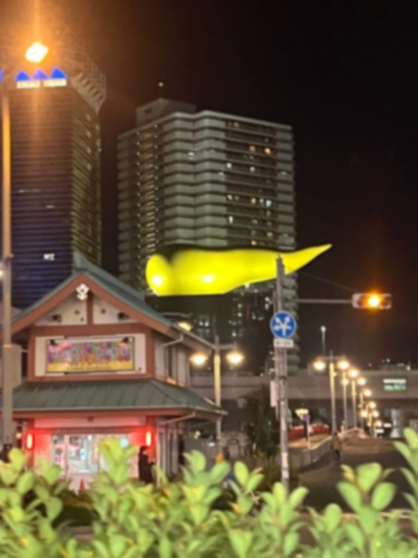
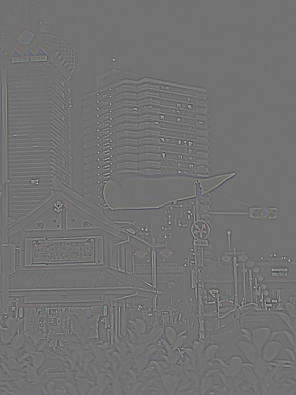
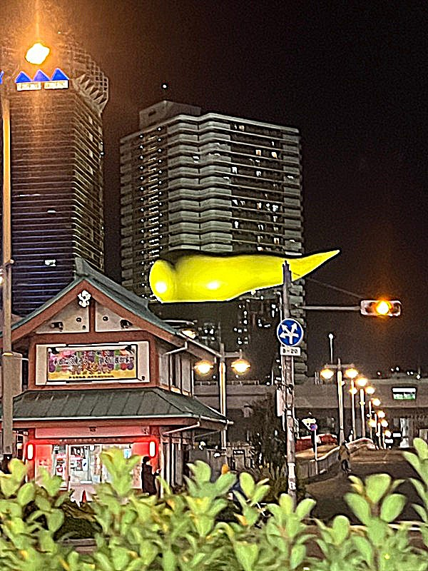
This photo is soft from digital zoom, which behaves like a Gaussian blur, so the balcony lines and signs get noticeably crisper. Higher α adds halos around the lights and grain in the sky. The foreground leaves stay soft because their blur is much wider than the filter, so there's little high frequency left to boost.
α = 1
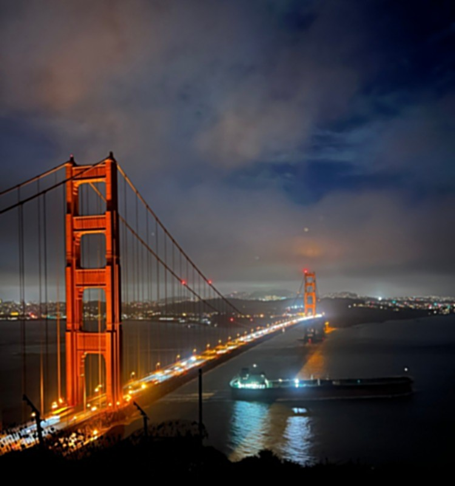
α = 2
α = 4
The blur wipes out the thin cables. Sharpening brings back the towers and thicker cables, but even at α = 4 the thinnest cables don't return. Sharpening can only boost frequencies that survived the blur, so it looks sharper but not like the original.
Up close we see fine detail, but from far away only coarse shapes survive. A hybrid adds
the high frequencies of one image (im1 − Gσ1 ⊛ im1) to the
low frequencies of another (Gσ2 ⊛ im2), after aligning them with
the starter code. A Gaussian with spatial σ cuts off around 1/(2πσ) cycles per
pixel, so σ = 3 keeps detail above about 0.05 cycles/px and σ = 6 keeps content
below about 0.03 cycles/px.
high freq source
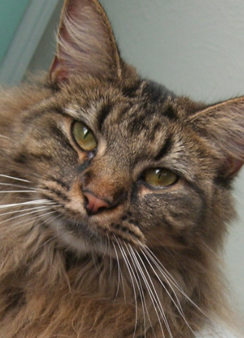
low freq source
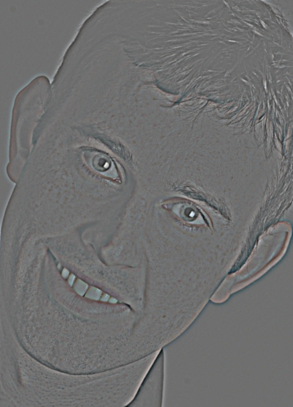
σ = 3
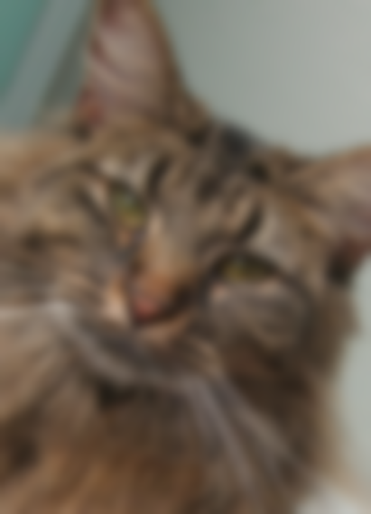
σ = 6
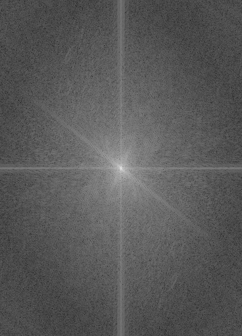
Derek
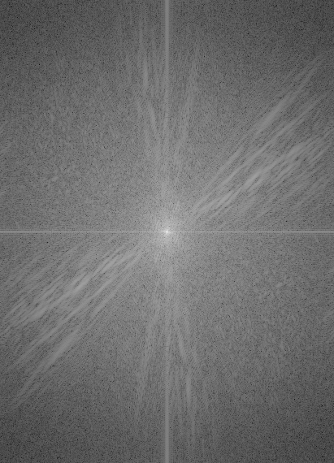
Nutmeg
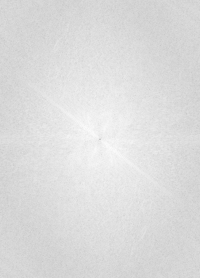
high-pass
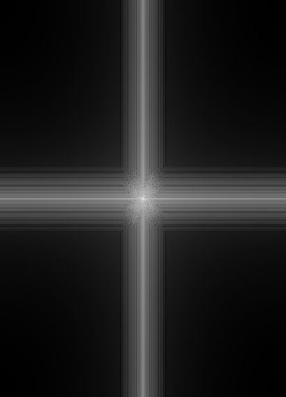
low-pass
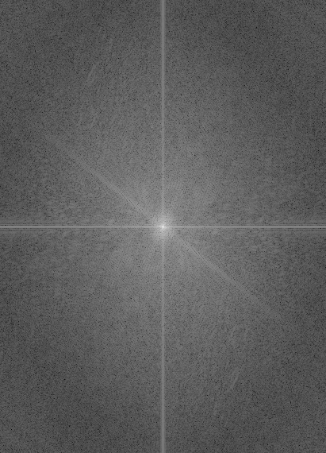
hybrid
In each FFT, the center is the lowest frequency and farther out is higher. The low-pass keeps only the center, the high-pass keeps everything but the center, and the hybrid's spectrum is Nutmeg's center plus Derek's outer region. The + cross comes from the FFT treating the image as repeating, which is normal.
At σ = 5 and 10, Derek's whole face came through and the cat was faint. Using 3 left Derek mostly as edges, and 6 for Nutmeg made the cat readable from far away. Alignment rotated Derek about 40°, which added black corners that showed up as fake edges, so I cropped both images to the area with real content before filtering.
Each hybrid is shown large (up close) and small (roughly what you see from across the room).
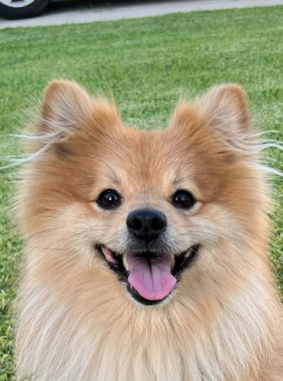
high, σ = 2
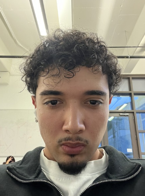
low, σ = 6
My dog's fur is high-contrast everywhere, so at equal weights it drowned me out. Using σ = 2 and scaling its high-pass by 0.6 fixed that. Up close you see the dog's eyes, nose and tongue, and from far away you see my face, hair and jacket.
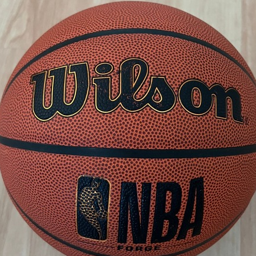
high, σ = 3
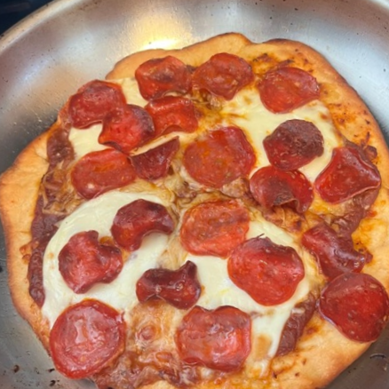
low, σ = 6
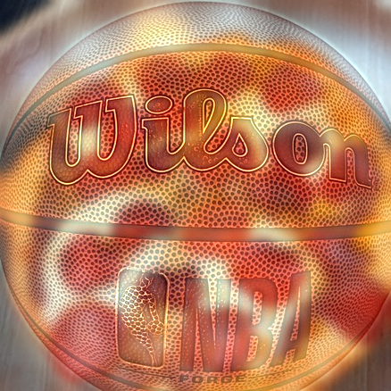
I first had the pizza as the high frequencies, and the ball's lettering showed up as dark smudges over the pepperoni. A basketball is recognized by its edges (seams and lettering) and a pizza by its color blobs, so I swapped them. Now it's a basketball up close and a pizza from far away.
A stack is a pyramid without downsampling, so every level is full size. Each Gaussian
level blurs the previous one with σ = 2. Each Laplacian level is the difference
Li = Gi − Gi+1, one band of frequencies, and the
last level is the final Gaussian. Summing the Laplacian stack gives back the original to
within 2.8e-17 (apple) and 1.4e-17 (orange).

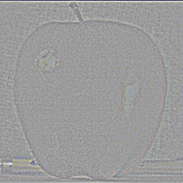
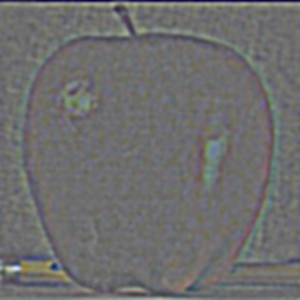
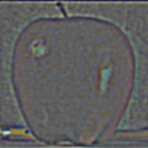
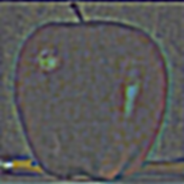


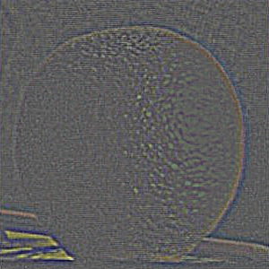
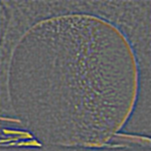
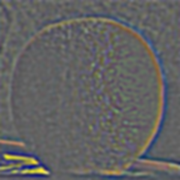
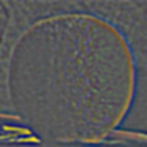
The stack goes from fine to coarse. L0 holds the finest grain, L3 holds thick soft edges, and L4 is the blurry color base. Levels L0 to L3 are signed, so gray means 0.
Each image is split into Laplacian bands and the mask gets its own Gaussian stack. Every
band is blended separately with
Bi = GMi·LAi + (1 − GMi)·LBi,
then the bands are summed. Fine bands get a sharp mask so texture doesn't ghost, and
coarse bands get a blurry mask so colors transition smoothly. I used 5 levels, σ = 2
for the images and σ = 8 for the mask.
Each row is a Laplacian level (0, 2, 4) and the last row is the full image. The columns are the masked apple, the masked orange and the two combined.
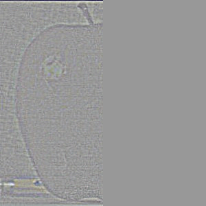
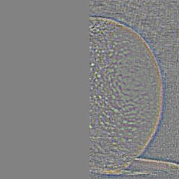
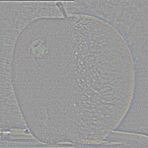
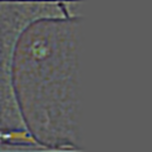
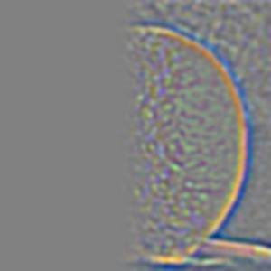
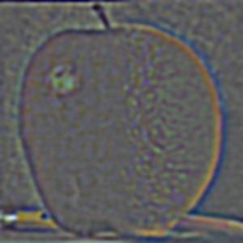
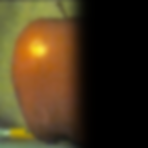
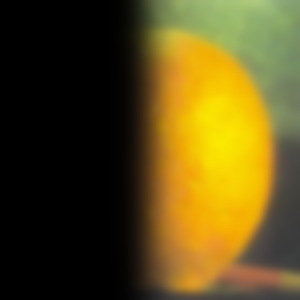
The left half reads as apple and the right half as orange, with a smooth color transition and no hard line. The mask blur has to fit the image. At a mask σ of 50 the mask became about 0.5 everywhere, so the fruits mixed across the whole picture. Mask σ = 6 and 8 looked almost the same, and the number of levels mattered more.
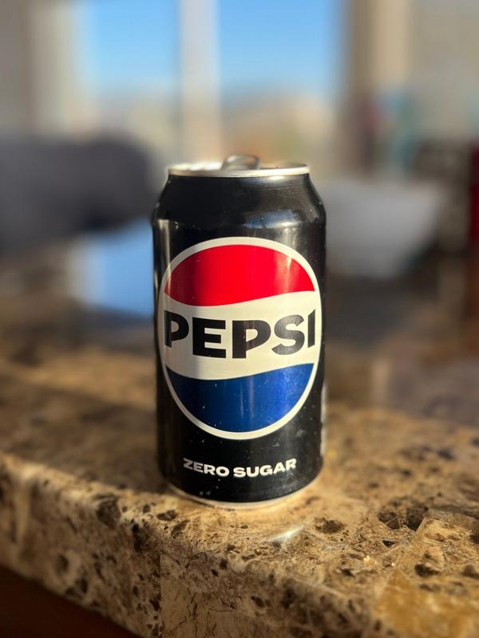
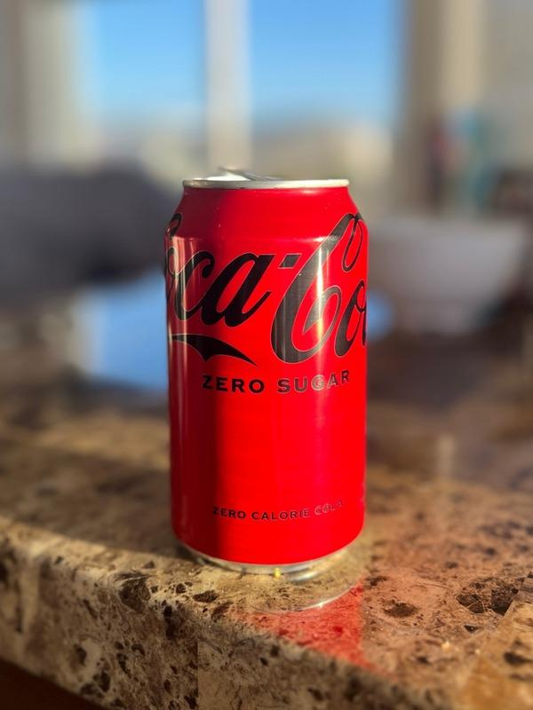
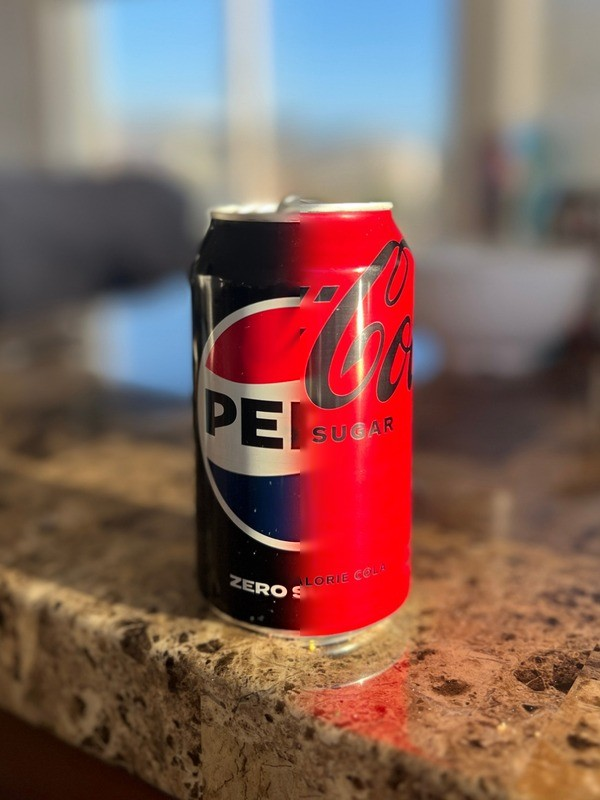
I took both photos from the same spot and lined up the cans. The background is the same in both, so the seam vanishes there. On the can, the color shifts smoothly from black to red while the lettering stays sharp up to the seam.
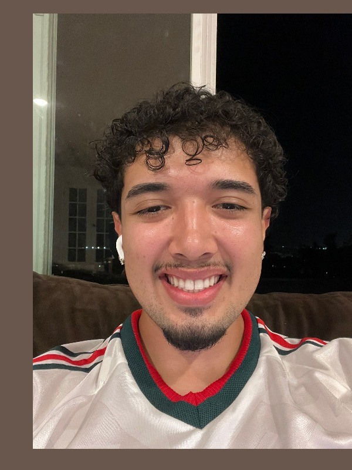
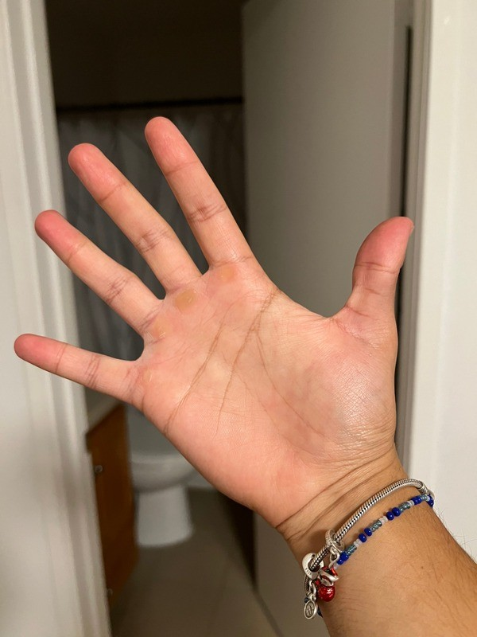
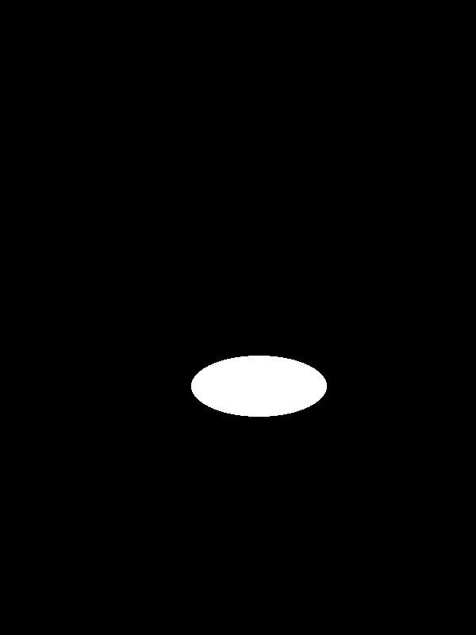
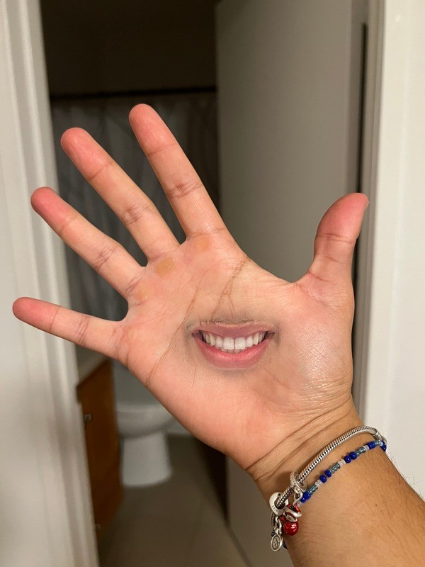
This is my take on the eye-in-palm example from Burt and Adelson. I moved the face photo so my lips sit in the middle of my palm and used an ellipse around the lips as the mask. The edge of the ellipse disappears and my face's warmer skin fades into my hand. The only giveaway is a few stubble dots at the corners, since fine texture near the mask edge survives.
The most important thing I learned is that an image can be split into high and low frequencies, and that each one can be used on its own to enhance and represent edges and features. Separating the two with a Gaussian blur is what let me find cleaner edges, sharpen images, build hybrids and blend images without visible seams.